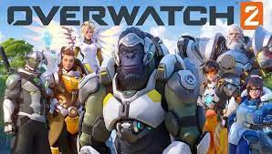
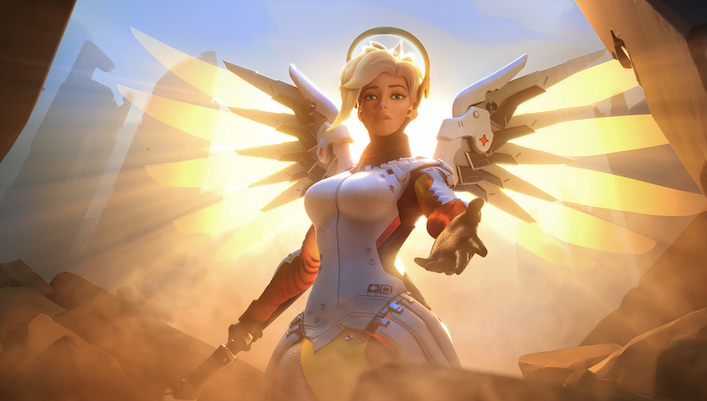

Overwatch 2 is a fast-paced, team-based multiplayer first-person shooter developed by Blizzard Entertainment. It builds on the original Overwatch with new maps, heroes, and a shift to a 5v5 format, making matches more exciting and strategic. The game emphasizes teamwork, hero abilities, and objectives rather than just eliminations.

Players select unique heroes, each with their own weapons, skills, and roles such as Tank, Damage, or Support. Teams work together to complete objectives like capturing points or escorting payloads while defeating opponents. Learning when to use abilities and how to coordinate with teammates is key to victory.
My favorite heroes are Mercy, Orisa, and Sojourn. Mercy is my go-to support hero for her healing and ability to revive allies. Orisa is a tank with a strong barrier and defensive tools. Sojourn brings speed and powerful railgun shots, making her a great damage dealer.

Learn more about the game here: Official Overwatch 2 Website